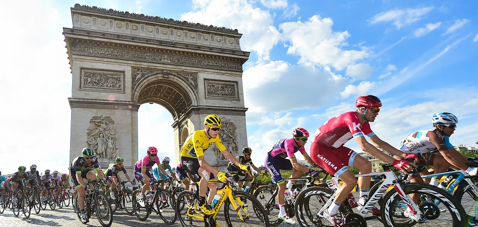
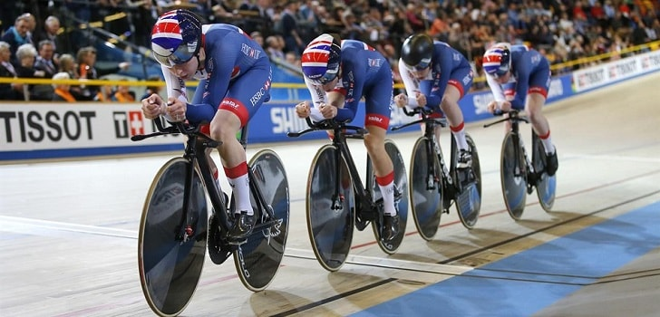
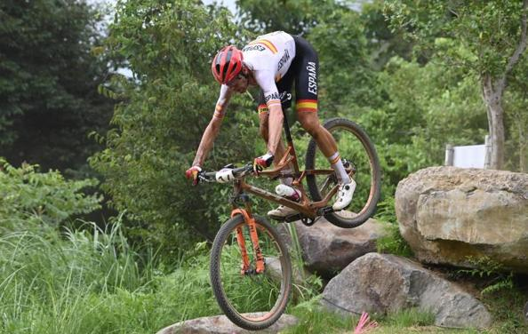
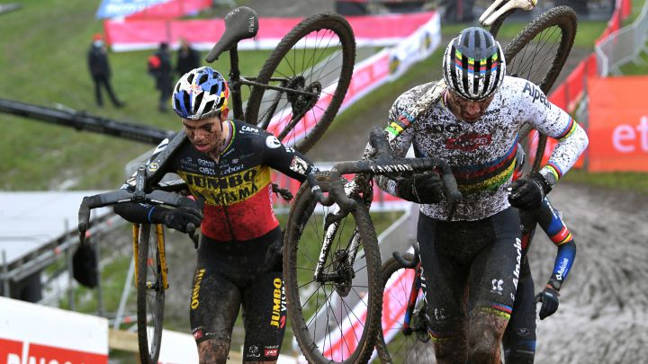

El ciclismo es un deporte en el que se utiliza una bicicleta1 para recorrer circuitos al aire libre o en pista cubierta y que engloba diferentes especialidades.
Se caracteriza por disputarse sobre asfalto aunque en determinadas pruebas se circule por caminos no asfaltados. Dentro del ciclismo en carretera existen las siguientes pruebas:
- Prueba en línea de un día. Las pruebas de este tipo de mayor éxito se denominan clásicas y dentro ellas destacan los llamados monumentos del ciclismo.
- Prueba por etapas. Se disputan en un mínimo de dos días con una clasificación por tiempos. Se compone de etapas en línea y etapas contrarreloj. Destacan Vuelta a España, Giro de Italia y la más prestigiosa el Tour de Francia. El objetivo es terminar todas las etapas en el menor tiempo posible.
Se caracteriza por disputarse en un velódromo y con bicicletas de pista, que son bicicletas de carretera modificadas. Hay varios tipos de pruebas
- Campo a través (Cross Country): Especialidad usual del ciclismo de montaña. Las bicicletas suelen llevar suspensión delantera solamente, aunque también se empiezan a utilizar suspensiones traseras. Esta prueba consiste en dar un número determinado de vueltas a un circuito, cuya longitud suele estar comprendida entre los 8 y los 11 kilómetros.
- Marathón: Especialidad donde las bicicletas son de iguales características que las de Cross Country, pero las competiciones no se realizan en circuitos cortos. Suelen ser recorridos de 40-100 km en entornos naturales.
- Descenso (Downhill (DH))2: Especialidad en la cual se compite en un camino totalmente en bajada, con saltos y obstáculos tanto naturales como artificiales. Las bicicletas llevan suspensiones delantera y trasera con amortiguadores y aceite hidráulico, además de frenos de disco, neumáticos de mayor anchura y protectores de platos o guía cadena. El equipo de protección es muy similar al de motocross ya que cuenta con casco cerrado, peto, coderas así como antebrazos, espinilleras-rodilleras, goggles y guantes. Es la modalidad más extrema en el deporte del ciclismo.
Modalidad ciclista, nacida a mediados del siglo XX que consiste en realizar un determinado número de vueltas a un circuito con tramos de asfalto, caminos y prados y con una serie de obstáculos (naturales o artificiales) que deban obligar al corredor a bajarse de la bicicleta para sortearlos. La principal característica es la utilización de bicicletas de carretera, aunque con algunas diferencias, como neumáticos más anchos para mejorar la tracción sobre tierra y barro o la utilización de pedales de bicicleta de montaña, entre otros. Es frecuente en la preparación invernal de algunos de los profesionales de ruta.
